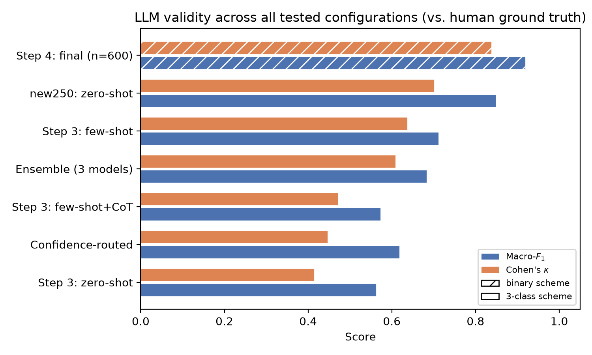

660K German news paragraphs mention ethnic and social groups, masked during coding to reduce bias. The question: can an LLM, guided by iteratively refined instructions, code crime framing as reliably as a trained human annotator? Final answer, on a 600-paragraph held-out sample: 98.7% agreement, κ = 0.839.
Working with Robin-Kiara Braun under Prof. Rainer Freudenthaler, we set out to answer: can large language models, guided by iteratively refined natural-language annotation instructions, reliably and validly identify group-related crime framing in German news coverage, and how does their performance compare with human annotators?
The corpus:
659,895 German-language news paragraphs from 60 outlets published in
2022, covering 78 nationality/ethnic/religious groups - masked as
[Gruppe 1] / [Andere Gruppe] during annotation to reduce coder
bias. Outlets span mainstream national (50.6% of paragraphs), regional (39.4%), and
alternative-right/left fringe media (10% combined). The top-mentioned groups: refugees
(117,132 paragraphs), Ukrainians (72,028), Russians (70,398).
We reimplemented Freudenthaler's "bacchuss" annotation-validation routine in Python as a four-stage pipeline:
NO_CRIME_FRAME vs. CRIME_FRAME_NEG (a third class, positive
crime framing, was dropped - only 1 case appeared in development data).
Final model: ministral-3-14b, run zero-shot with 10-repeat majority voting.
Llama-3.3-70B and qwen3.5-27b were used only in the ensembling
side-experiment - and didn't make the cut.
Only 8 disagreements out of 600 paragraphs on the final, held-out sample. Getting there took real iteration - macro-F1 moved from 0.563 (zero-shot, first batch) to 0.712 (few-shot) to 0.574 (few-shot + chain-of-thought, a real regression) to 0.849 (zero-shot again, after refining the instructions) to 0.920 (final).
The LLM's κ = 0.839 is measured against the resolved human-consensus label, not against any single annotator - while the human α = 0.616 measures two individual coders agreeing with each other from scratch, before resolution. Those are different, harder-to-compare targets: matching a cleaned consensus label is an easier bar than two people independently agreeing on an ambiguous case. The LLM's own prediction was also a 10-repeat majority vote, which reduces its noise the same way a panel of human coders would. Reported side by side on purpose, not to imply the model "beats" human judgment.


Two side-experiments failed and were cut: multi-model ensembling gained only 6 F1 points for 3x the inference cost, and confidence-based routing was miscalibrated in the wrong direction - the model was least confident on exactly the cases it got right. Both are reported in the paper as negative results, not hidden.
Chain-of-thought prompting made things worse here (0.712 → 0.574) before instruction refinement fixed it - a genuinely counterintuitive result that's easy to paper over but more useful to report honestly. And the exploratory finding that alternative-right outlets showed the highest negative-crime-framing rate (7.9% vs. 3.6–4.8% elsewhere) is flagged, correctly, as suggestive rather than confirmed: the confidence intervals overlap substantially at this sample size, and the paper says so explicitly rather than overselling a 600-paragraph descriptive statistic.